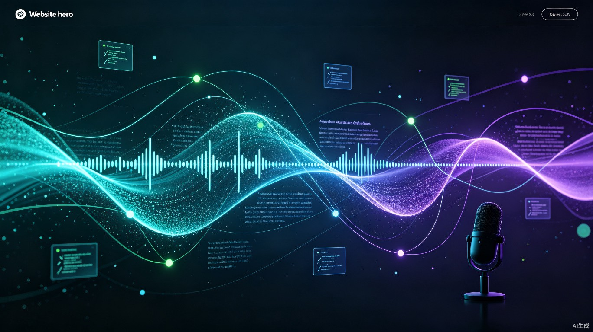

自动发现 GitHub 热门项目，AI 深度解读，合成播客音频，一键发布到全平台。每天只需 1 键，产出 24 小时可听的优质内容。
目录 · Contents
从 GitHub 热门项目到完整播客的端到端流水线
实时进度、批量生成、连续播放等用户亮点
FastAPI + LLM + TTS + 多平台发布
从 10 篇到 1000 篇：3 周迭代 12 个版本
为什么做这个
GitHub 每天 10000+ 新仓库，技术人靠"刷 Trending"漏掉 90% 的优质项目。
AI 自动解读每个项目成 800-1200 字深度文章，合成自然语音，无需人工。
每天 1000+ 篇播客文章，60+ 小时音频，覆盖 4 大平台，全自动化。
Section · 01
从发现到播放，端到端的 5 步自动化流水线
Pipeline · 端到端流水线
Trending + Search API
最高 1000 个仓库
GitHub API
前 3000 字上下文
Qwen-72B
800-1200 字/篇
CosyVoice2
8 种音色
喜马拉雅/小宇宙
B站/公众号
Features · 用户体验亮点
每生成 1 篇就更新，完成度百分比 + 当前处理项目名实时显示
串行/2/5/8/10 路可调，串行模式压力最小但支持 24h 连续听
按下一篇自动播放，搭配可调 1.0-2.0x 语速，单击收听
服务端 FFmpeg loudnorm + 客户端 0-3x 放大，告别小音量
历史文章 + 偏好设置（音量/连播）保存到 localStorage
4 男 4 女，覆盖沉稳/低沉/磁性/欢快/激情/温柔
Section · 02
FastAPI + LLM + TTS + 多平台发布的一站式解决方案
Tech Stack · 技术栈
异步 Web 框架
类型安全 + 自动文档
Qwen-72B
800-1200 字/篇
硅基流动 0.5B
8 种中文音色
EBU R128 响度标准化
+10dB 增益
asyncpg 异步驱动
Alembic 迁移
任务队列 + 缓存
实时进度通知
docker-compose 一键起
Prometheus + Grafana
每日定时任务
GitHub Actions CI
Evolution · 版本演进
GitCast v22 · 每天一键，产出 24 小时可听的优质播客内容